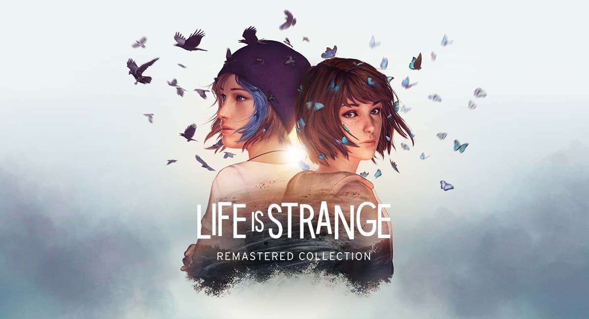
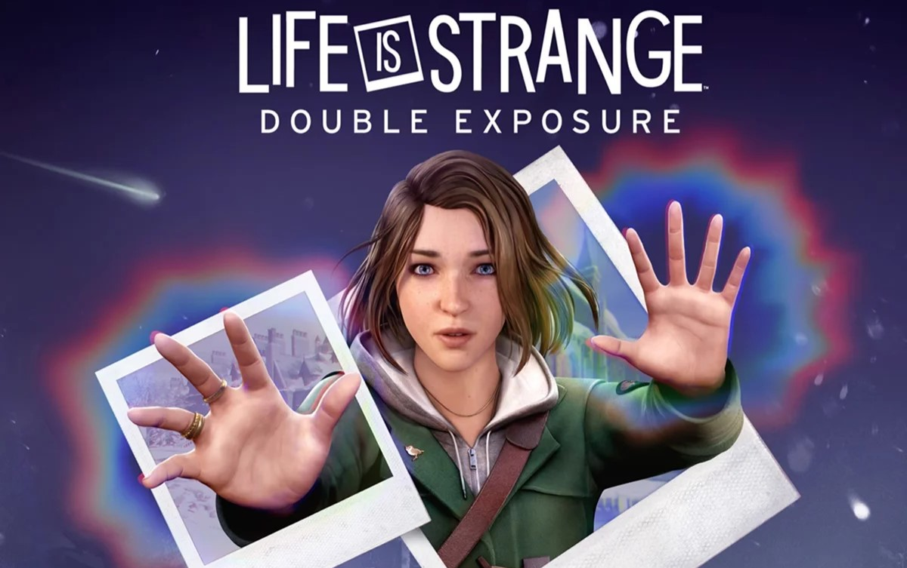

Em "Life is Strange", os jogadores seguem Max Caulfield, que descobre ter o poder de manipular o tempo. Max usa suas habilidades para investigar o desaparecimento de Rachel Amber, enfrentar dilemas morais e pessoais, e lidar com as consequências de suas ações enquanto tenta salvar sua cidade de uma catástrofe iminente.
Menu
Gerais
Life is Strange
Uma aventura episódica centrada na adolescente Max Caulfield, que descobre a habilidade de voltar no tempo, afetando profundamente suas escolhas e as vidas ao seu redor.
Por Isaque G. S. Brandão | 03/07/2024

Fonte: Deck Nine
Apresentação
Início
"Life is Strange" começa com Max retornando à sua cidade natal, Arcadia Bay, para frequentar a prestigiosa Blackwell Academy. Durante uma aula de fotografia, Max tem uma visão de um tornado devastando a cidade. Pouco depois, ela descobre que tem a habilidade de voltar no tempo ao testemunhar o assassinato de sua antiga amiga, Chloe Price, e reverter o evento. A partir desse momento, Max e Chloe se unem para investigar o desaparecimento de Rachel Amber, uma amiga de Chloe, e descobrir segredos sombrios que envolvem Arcadia Bay.
Trailer do jogo
"Life is Strange"
Desenvolvimento
A jogabilidade de "Life is Strange" é centrada na exploração, interação com personagens e a tomada de decisões que afetam o desenrolar da história. Max usa sua habilidade de voltar no tempo para resolver puzzles, ajudar seus amigos e corrigir erros, mas cada mudança no tempo traz consequências inesperadas.
A investigação de Max e Chloe as leva a desvendar uma conspiração que envolve membros da comunidade de Arcadia Bay, incluindo figuras de autoridade e colegas de Blackwell Academy. O jogo aborda temas profundos como bullying, depressão, amizade, e identidade, enquanto Max enfrenta dilemas morais complexos. Cada decisão pode alterar o curso dos eventos e impactar o destino dos personagens.

Os episódios do jogo são estruturados para criar tensão e desenvolver os relacionamentos entre os personagens. A atmosfera é complementada por uma trilha sonora emocionalmente evocativa e um estilo visual único que realça a narrativa.
Conforme a história avança, Max descobre a verdadeira extensão de seus poderes e as consequências de suas ações. A investigação sobre o desaparecimento de Rachel Amber culmina em uma revelação chocante, levando Max e Chloe a confrontar o culpado e tentar evitar o desastre natural que ameaça Arcadia Bay.
Conclusão
"Life is Strange" oferece uma experiência narrativa profunda e emocionalmente envolvente, destacando-se por sua abordagem única à mecânica de viagem no tempo e suas ramificações. A história de Max e Chloe é cativante, com personagens bem desenvolvidos e situações realistas que ressoam com os jogadores.
O jogo aborda questões importantes e frequentemente ignoradas em outros títulos, proporcionando uma reflexão sobre as consequências de nossas escolhas e a complexidade das relações humanas. A Dontnod Entertainment conseguiu criar um ambiente imersivo e uma narrativa poderosa que toca em temas universais.
Em resumo, "Life is Strange" é uma obra-prima do gênero de aventura episódica, combinando uma história emocionante com mecânicas de jogo inovadoras. A série não só oferece entretenimento, mas também convida os jogadores a refletirem sobre suas próprias vidas e escolhas. É uma experiência obrigatória para qualquer pessoa interessada em narrativas interativas e jogos que desafiam as convenções.
Veja também

Tudo sobre o novo "Life is Strange Double Exposure"
Max Caulfield retorna em "Life is Strange: Double Exposure", onde deve resolver e prevenir o assassinato de sua nova amiga Safi navegando entre duas realidades paralelas.

Expectativa para Lost Records: Bloom & Rage
Após 27 anos sem contato, as amigas do ensino médio terão que se reunir para desvendar um segredo enterrado a muito tempo, na qual as fez cortar contato umas com as outras durante muito tempo.

Enredo de Tomb Raider
"Tomb Raider" (2013) é um jogo de ação e aventura desenvolvido pela Crystal Dynamics e publicado pela Square Enix. É um reboot da série, apresentando uma versão mais jovem e inexperiente de Lara Croft, que deve sobreviver em uma ilha misteriosa cheia de perigos.